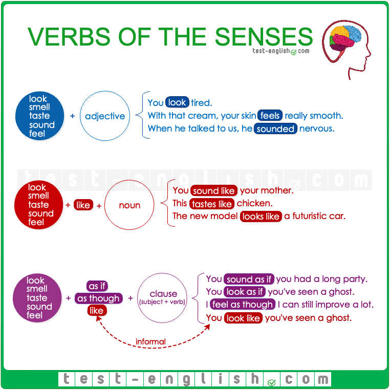

<!-- 2 quantifiers

resumen:    no tenemos que repetir una negación al usar aren't y luego
            la palabra no denuevo por ejemplo

    there isn't any money left      there is no money left

    las dos frases estan correctas pero no puedeo escribir

    there isn't no money left....

-->
<!-- 3 enough and too

we use wnough and too as questifiers to talk about sufficiency
"usamos 'enough'(suficiente) y 'too' (demasiado o demasiados) como cuantificadores para hablar de suficiencia. "

------------------------------------------------------------------

we will see four forms 

too much = (demasiado),
too many = (demasiado), 
enough = (suficiente),
not enough = (no suficiente) 

------------------------------------------------------------------
we use these quantifiers when we want to say simething is more, less or the exact amount of something.
"utilizamos estos cuantificadores cuando queremos decir que algo es más, menos o la cantidad exacta de algo"


we can use enough, and too with adjectives, with verbs, and with nouns
"podemos usar enough y too con adjetivos, verbos y sustantivos"

in this class, we're going to talk about enough and too plus nouns.
"en esta clase, vamos a hablar de enough y too con sustantivos"

------------------------------------------------------------------
we use too much and too many to talk about something that is more than sufficient 

too much:   we use too much with an uncountable noun. examples

        "i have too much homework"
        "that's too much sugar"

        es más que suficiente trabajo y asucar, por lo que no nesecitamos más 

too many:   we use too many with countable nouns. examples

        "she ate too many aggs"
        "there are too many people there"

        es más que suficiente gente ahi y suficientes huevos.

------------------------------------------------------------------
we use not enough, with not enough we can use countable noun or unaccountable noun. examples

        "i don't have enough money"
        "there are not enough chairs in the classroom"

        no tengo suficiente dinero, necesito más dinero.
        necesitamos más sillas por que no son suficientes las de la sala.

------------------------------------------------------------------
when we want to say something is sufficient, it the exact amount we use enough. and we can use enough with countable or uncountable nouns.
for examples:

        "we have enough bread"
        "you already have enough books. you don't need more"

        no secesitamos más de lo que sea, contable o incontable.


-->
<!-- 4 using adjectives

verbs of the senses
                       
look                  | you look tired
smell                 |     
faste   +  adjective <  with that cream, your skin feels really smooth
sound                 |               
feel                  |_when he talked to us, he sounded nervous


-->

<!-- 8 that and this

this and thar | aubject and objective pronouns

podemos usar this and that de diferentes maneras en ingles.
una forma de usar this y that es como un determinante.
cuando usamos algo como determinante, tiene que estar seguido por un sustantivo.

utilizamos los pronombres en lugar de sustantivos o frases sustantivas.
para this y that vamos a utilizar dos formas diferentes, como pronombre sujeto y pronombre objeto.
tmbn en lugar de cosas, ideas y personas.

ejemplos:  cuando usamos this y thar como pronombre sujeto, significa que this y that realizan la acción de la frase.

        "that's clear to me" (eso está claro para mí)
        "this movie is amazing" (esta película es increible)

ejemplos: cuando usamos this y that como pronombre de objeto,
el objeto recibe la acción en la frase .

        "have a look at this" (echa un vistazo a esto)
        "are you okay with this?" (¿te parece bien eso?)


-->
<!-- 9 impersonal pronouns

impresonal pronouns using every/ any/ some/ no "cada/ cualquier/ algunos/ no"

los usamos de manera genericoa al hablar de personas, lugares y objetos genericos.
lista de usos del sufijo thing

        things          places          people
avery   everything      everywhere      everyone
        .               .               everybody
any     anything        anywhere        anyone
        .               .               anybody
some    something       somewhere       someone
        .               .               somebody
no      nothing         .nowhere        no one
        .               .               nobody
-------------------------------------------------------------------


-->
<!-- 11 ditransitive verbs

tenemos distintos tipos de verbos:
        verbos de acción
        verbos frasales
        verbos estáticos

en esta clase veremos los verbos distransitivos. 
se llaman asi porque funcionan con uno o varios objetos
vimos anteriormente que el objeto es lo que recibe la acción del verbo.
un verbo detransitivo funciona con un objeto directo y un objeto indirecto.
el objeto directo es la persona o la cosa afectada por la acción.
el objeto indirecto es la persona o la cosa que recibe el efecto o la acción.   ejemplos:

        "pass her the book" (pásale el libro)
        pass es el verbo ditransitivo porque trabaja con dos objetos 
        book es el objeto directo porque es la cosa afectada por la accion.

        "give the book to him" (dale el libro a él)
        "buy them some food" (cómprales comida a ellos)

-->
<!--  -->
<!--  -->
<!--  -->
<!--  -->
<!--  -->
<!--  -->